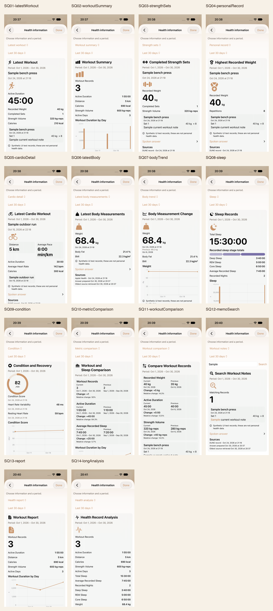

DUNE · 2026.10.30 · Xcode 27.2
Siri 건강 정보
새 iPhone 실제 화면 17장
최신 네이티브 PNG

남은 확인
- 최대 글씨: 목표 메뉴 행 전체 선택에서 첫 실행과 조건부 재시도 실패. 결과 hero 완료 캡처 0장
- iPhone: 기존 기간·출처 이동 및 공유 취소 조작의 최종 재검증, SQ10·SQ13의 viewport 아래 축 표시
- iPad·Duo 접힘/펼침: 신규 화면 최종 원본 미갱신
- 실제 Siri: 한국어 발화 라우팅·음색·억양·AirPods·Watch 청취 미실행
최대 글씨 실패 진단 · 완료 캡처로 계산하지 않음
실패 원인과 실행 범위
첫 실행: 화면 밖 목표 행 · 재시도: 스크롤 후 일부만 보이는 목표 행
비주얼 강조 디자인 시안
앱 실제 캡처와 별도로 보존한 디자인 제안입니다. 14개 기능별 강조안·기본안, 밝음/어두움·큰 글씨·기기 폭·데이터 상태를 비교합니다.
네이티브 17장: test source be22072d / app source 19754ce6 · Xcode27.2(27B52) · 전용 iPhone094E24A5. 최대 글씨 실패 진단은 test source be22072d와 a3877321. 예전 18장과 초기 실패 캡처를 새 화면 증거로 재사용하지 않습니다. Watch는 별도 제안만 있으며 새 네이티브 화면이 추가되지 않았습니다.